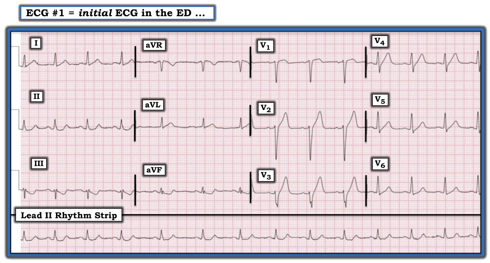
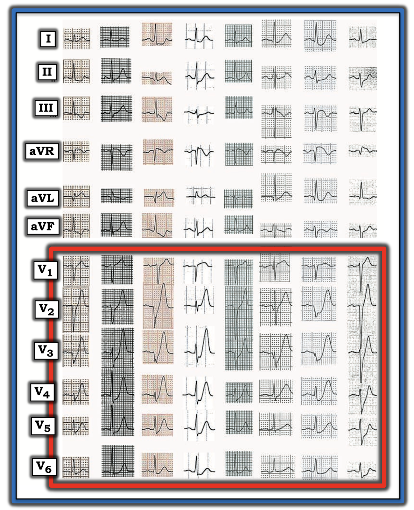
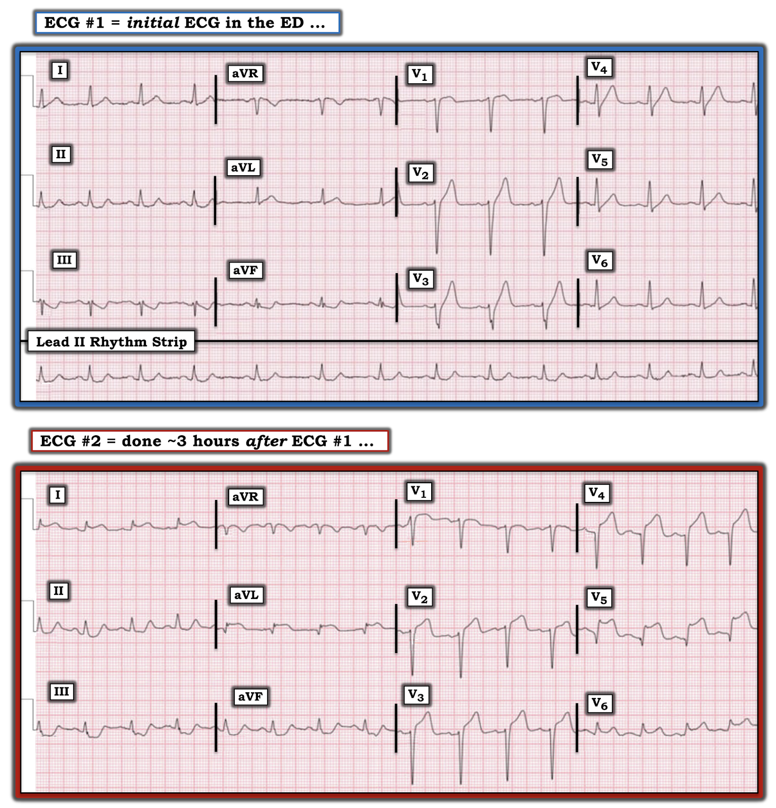
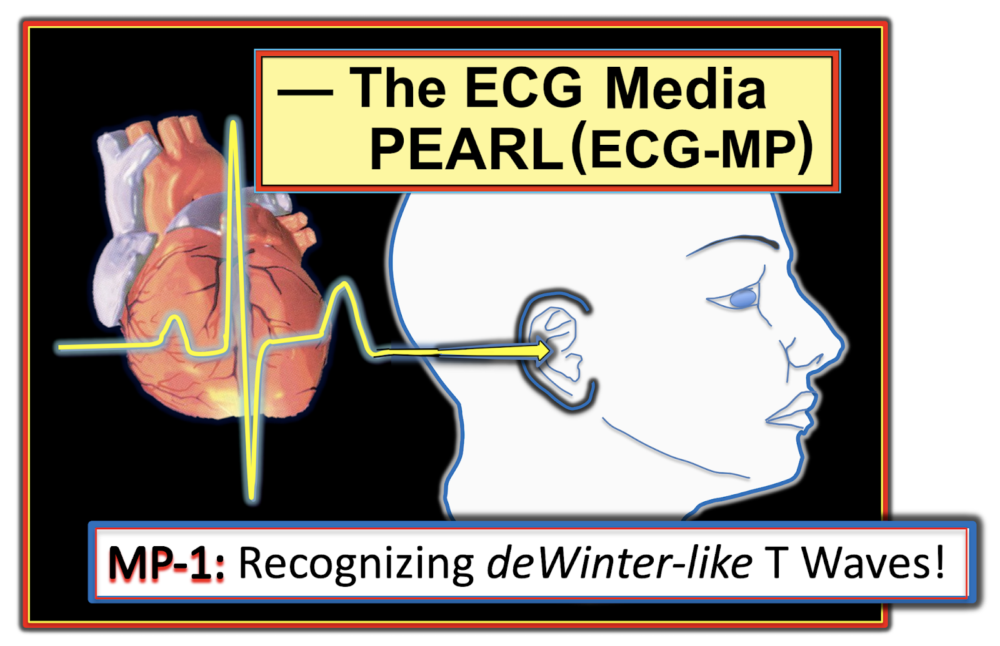

ECG Blog #183 — Tái cực hay giống deWinter?
LƯU Ý: XEM BÊN DƯỚI để nghe ECG Media Pearl hôm nay — một thông điệp âm thanh liên quan đến hiện tượng Sóng T giống deWinter.
======================================
Bệnh nhân có điện tâm đồ trong Hình-1 là một người đàn ông trung niên đến khoa cấp cứu vì đau ngực mới khởi phát.
2 trong số 5 lựa chọn sau đây là đúng nhất?
- Điểm cộng: VÌ SAO 3 lựa chọn còn lại hoặc kém chính xác hơn, hoặc sai?
CÁC LỰA CHỌN cần cân nhắc:
- Lựa chọn A: Sóng T ở các chuyển đạo thành trước có thể phản ánh một biến thể tái cực.
- Lựa chọn B: Sóng T ở thành trước và sóng ST-T ở thành dưới gợi ý có thể có thiếu máu cục bộ.
- Lựa chọn C: Cần kích hoạt phòng thông tim (cath lab) ngay lập tức với “báo động OMI”.
- Lựa chọn D: Hình ảnh sóng T deWinter “kinh điển” có hiện diện ở các chuyển đạo thành trước.
- Lựa chọn E: Dù không thấy hình ảnh sóng T deWinter “kinh điển” trên điện tâm đồ #1 — ý nghĩa lâm sàng về cơ bản vẫn giống như khi có hình ảnh này.


SUY NGHĨ CỦA TÔI về điện tâm đồ #1:
Như mọi khi — TỐT NHẤT là bắt đầu bằng việc đánh giá có hệ thống điện tâm đồ đang xét trước khi chuyển sang ý nghĩa lâm sàng.
- LƯU Ý: Rất dễ bỏ sót việc nhịp trên điện tâm đồ #1 không đều nếu không bắt đầu bằng việc xem dải nhịp chuyển đạo II dài ở cuối bản ghi. Cơ chế của nhịp là nhịp xoang — và mọi phức bộ QRS đều có sóng P hình dạng tương tự đi trước với khoảng PR không đổi. Sự thay đổi khoảng R-R trong nửa đầu bản ghi phù hợp với loạn nhịp xoang — sau đó trở nên đều thành nhịp xoang bình thường với tần số ~80-85/phút về cuối dải nhịp.
- Tất cả các khoảng (PR, QRS, QTc) và trục đều bình thường. Không có lớn buồng tim.
Về Thay đổi Q-R-S-T:
- Không có sóng Q.
- Sóng R ở các chuyển đạo thành trước V1, V2, V3 hơi chậm tăng cho tới khi vùng chuyển tiếp xuất hiện giữa V3 và V4 (nhưng không có sóng Q hay phức bộ QS ở thành trước).
- Dấu hiệu đáng chú ý nhất là sự hiện diện của sóng T tối cấp thấy ở các chuyển đạo V2, V3 và V4. Dấu hiệu này rõ nhất ở chuyển đạo V3 (nhất là khi biên độ sóng S ở chuyển đạo này tương đối nhỏ) — dù không có ST chênh lên ở chuyển đạo này. Sóng T ở 3 chuyển đạo ngực này rõ ràng cao-hơn-mức-cần-có và quá “đồ sộ” (tức là đỉnh béo hơn và đáy rộng hơn so với mức dự kiến theo biên độ QRS ở từng chuyển đạo tương ứng).
- Có ST chênh lên nhẹ ở V1 và V2.
- Đáng chú ý — có điểm J chênh xuống kín đáo-nhưng-chắc chắn ở V4, V5 và V6.
- Có đoạn ST dạng lõm (scooping), chênh xuống nhẹ ở các chuyển đạo thành dưới (kèm phần cuối sóng T dương sau đoạn ST-T chênh xuống).
Nhận định lâm sàng về điện tâm đồ #1: Đây không phải một biến thể tái cực (Lựa chọn A). Không chỉ là “có thể thiếu máu cục bộ” (Lựa chọn B) — bản ghi này có những bất thường điện tâm đồ chắc chắn ở bệnh nhân đau ngực mới khởi phát. Với bệnh sử này — điện tâm đồ #1 phải được đọc là OMI (nhồi máu cơ tim do tắc – Occlusion-based MI) cấp do tắc LAD đoạn gần cho tới khi chứng minh được điều ngược lại — và cần kích hoạt phòng thông tim ngay (Lựa chọn C).
- ĐIỂM THEN CHỐT (PEARL) #1: Có một số dấu hiệu trên điện tâm đồ #1 gợi ý tắc LAD ở vị trí đoạn gần của mạch máu này. Bao gồm: i) ST chênh lên bắt đầu sớm ngay từ chuyển đạo V1 — với sóng T tối cấp cũng bắt đầu sớm (ở chuyển đạo V2); và, ii) Thấy thay đổi ST-T soi gương (reciprocal) ở các chuyển đạo thành dưới. Tắc LAD đoạn gần thường cũng đi kèm ít nhất ST chênh lên nhẹ ở aVL — nhưng ở đây không có.
- ĐIỂM THEN CHỐT (PEARL) #2: BẠN có nhận ra sự thiếu tăng tiến sóng R cho tới chuyển đạo V4 không? Sự hiện diện của sóng r khởi đầu nhỏ-nhưng-có thật ở V1 và V2 gợi ý vách còn nguyên vẹn — nhưng việc biên độ sóng R hoàn toàn không tăng cho tới V4 có thể là dấu hiệu của nhồi máu thành trước đang tiến triển (tức là mất các lực khử cực thành trước).
Sóng T DeWinter:
Năm 2008 — Robert J. deWinter và các đồng nghiệp (Drs. Verouden, Wellens, và Wilde) đã gửi một Thư gửi Ban biên tập tạp chí New England Journal of Medicine (N Engl J Med 359:2071-2073, 2008) — trong đó họ mô tả một “hình ảnh điện tâm đồ mới” không có ST chênh lên, biểu thị tắc cấp động mạch vành LAD (động mạch liên thất trước – Left Anterior Descending) đoạn gần.
- Các tác giả ghi nhận hình ảnh này ở 30 trong số 1532 (~2%) bệnh nhân nhồi máu cơ tim thành trước cấp. Thông tim xác nhận tắc LAD ở tất cả các trường hợp — với ~50% bệnh nhân có LAD "vòng qua mỏm" (wraparound). Không có trường hợp nào tắc thân chung động mạch vành trái.
- Đây là mô tả nguyên bản của các tác giả về hình ảnh điện tâm đồ mới: “Thay vì ST chênh lên đặc trưng — đoạn ST cho thấy ST chênh xuống dốc lên 1-3 mm tại điểm J ở các chuyển đạo V1 đến V6 — nối tiếp thành sóng T cao, dương, đối xứng”.
- Phức bộ QRS thường không giãn rộng (hoặc chỉ giãn rộng tối thiểu).
- Hầu hết bệnh nhân cũng có ST chênh lên 1-2 mm ở aVR.
- LƯU Ý: Tôi đã phỏng theo Hình-2 từ bản thảo gốc của de Winter, công bố trong trích dẫn NEJM năm 2008 này.


Trong bản thảo gốc năm 2008 — de Winter và cs. còn mô tả thêm các đặc điểm sau:
- “Dù sóng T cao, đối xứng đã được biết là một đặc điểm sớm, thoáng qua, sau đó chuyển thành ST chênh lên rõ ở các chuyển đạo trước tim — ở nhóm bệnh nhân này, hình ảnh mới này tĩnh, tồn tại từ lúc ghi điện tâm đồ thứ 1 cho tới điện tâm đồ trước thông tim.”
- Tăng kali máu không phải yếu tố góp phần tạo nên hình ảnh điện tâm đồ này (tức là nồng độ K+ huyết thanh lúc nhập viện của các bệnh nhân này bình thường).
LƯU Ý: Nói một cách chặt chẽ — hình ảnh sóng T de Winter như de Winter và cs. mô tả năm 2008 khác với dấu hiệu đơn thuần sóng T thành trước “tối cấp” — vì các dấu hiệu điện tâm đồ của hình ảnh sóng T de Winter đúng nghĩa tồn tại một giờ hoặc lâu hơn cho tới khi mạch LAD “thủ phạm” được tái tưới máu.
- Như tôi đã nêu ở trên (và như minh họa ở các điện tâm đồ ví dụ lấy từ bản thảo của de Winter trình bày trong Hình-2) — hình ảnh de Winter đúng nghĩa phải liên quan đến cả 6 chuyển đạo ngực, với hầu hết các chuyển đạo cho thấy điểm J chênh xuống dốc lên vài mm và sóng T khổng lồ.
NHẬN XÉT CỦA TÔI về sóng T De Winter:
Trong thập kỷ qua — tôi đã quan sát thấy theo đúng nghĩa đen hàng trăm case trên nhiều Diễn đàn điện tâm đồ quốc tế trên internet có sóng T giống-như deWinter ở bệnh nhân có triệu chứng tim mới xuất hiện.
- Nhiều (phần lớn) case trong số này không đáp ứng định nghĩa chặt chẽ về “sóng T de Winter” — ở chỗ có thể không phải cả 6 chuyển đạo ngực đều bị ảnh hưởng — điểm J chênh xuống thường rất ít (nếu có) ở nhiều chuyển đạo ngực — và, sóng T khổng lồ thì hạn chế.
- Thay đổi điện tâm đồ ở nhiều case này không “tĩnh” cho tới khi tái tưới máu, như de Winter và cs. báo cáo ban đầu năm 2008. Tuy vậy, theo dõi bằng thông tim thường xuyên xác nhận tắc LAD.
- QUAN ĐIỂM "của tôi": Tôi tin rằng có một phổ các dấu hiệu điện tâm đồ mà trong bối cảnh triệu chứng tim mới khởi phát có giá trị dự báo nguyên nhân là tắc LAD cấp. Những gì thấy trên điện tâm đồ phụ thuộc rất nhiều vào việc điện tâm đồ được ghi vào thời điểm nào trong tiến trình. Dù nhiều bệnh nhân trong số này không biểu hiện “sóng T de Winter thực sự” (vì hình ảnh điện tâm đồ của họ không giữ tĩnh cho tới khi tái tưới máu bằng nong mạch vành) — với mục đích thực hành là nhận ra OMI cấp kịp thời — tôi cho rằng ( = ý kiến của tôi) việc hiện diện hình ảnh sóng T de Winter “thực sự” hay chỉ đơn thuần sóng T “tối cấp” (giống-như deWinter) là không quan trọng.
=====================================
LƯU Ý: XEM BÊN DƯỚI để nghe ECG Media Pearl (#1) hôm nay — một thông điệp âm thanh liên quan đến hiện tượng Sóng T giống deWinter.
=====================================
Về case hôm nay: So sánh hình dạng sóng ST-T ở các chuyển đạo ngực trên điện tâm đồ #1 với 8 bản ghi ví dụ từ bản thảo gốc của de Winter và cs. trình bày trong Hình-2 — điện tâm đồ #1 thiếu một số đặc điểm:
- Sóng T tối cấp trên điện tâm đồ #1 không nổi bật bằng 8 ví dụ trong Hình-2.
- Chuyển đạo ngực trên điện tâm đồ #1 có sóng T nổi bật nhất ( = chuyển đạo V3) không có điểm J chênh xuống.
- Chỉ có một chuyển đạo trên điện tâm đồ #1 có cả điểm J chênh xuống và sóng T tối cấp ( = chuyển đạo V4).
- ĐIỀU CỐT LÕI: Điện tâm đồ #1 không đáp ứng tiêu chuẩn “STEMI” — vì ST chênh lên chưa đủ. Nó cũng chưa hoàn toàn khớp với mô tả nguyên bản năm 2008 về sóng T de Winter. Dù vậy — ở bệnh nhân đau ngực mới khởi phát này, vẫn phải thấy rõ rằng cần mặc định là tắc LAD đoạn gần cấp cho tới khi chứng minh được điều ngược lại!
Điện tâm đồ thứ 2 trong case hôm nay:
Một điện tâm đồ theo dõi được ghi khoảng 3 giờ sau điện tâm đồ #1. Để tiện so sánh — tôi đặt điện tâm đồ #2 này dưới bản ghi ban đầu trong Hình-3.
- BẠN sẽ mô tả những thay đổi điện tâm đồ đã xảy ra kể từ bản ghi ban đầu như thế nào?


SUY NGHĨ CỦA TÔI về bản ghi theo dõi:
Điện tâm đồ #2 cho thấy đã có diễn tiến rộng rãi trong 3 giờ kể từ khi ghi bản ghi ban đầu:
- Hiện thấy một sóng Q có ý nghĩa ở chuyển đạo aVL trên điện tâm đồ #2, kèm gợi ý một sóng q nhỏ ở chuyển đạo I. Điều này đi kèm giảm biên độ sóng R (so với điện tâm đồ #1) ở cả hai chuyển đạo bên cao này.
- Tăng tiến sóng R kém ở V1, V2 và V3 vẫn tồn tại — với mất sóng r khởi đầu ở chuyển đạo V4 — dẫn tới sóng Q rõ ở V4 và V5.
- Hiện có ST chênh lên rõ rệt ở nhiều chuyển đạo, gồm I, aVL và V2 đến V6.
- Thay đổi soi gương dạng ST chênh xuống ở các chuyển đạo thành dưới đã sâu hơn so với điện tâm đồ #1.
- Thông tim được tiến hành sau điện tâm đồ #2. Kết quả xác nhận tắc đoạn gần LAD cấp. Có kèm bệnh nhiều nhánh mạch vành nền (với hẹp ~50-60%).
KẾT LUẬN: Dựa trên kinh nghiệm của tôi trong thập kỷ qua khi bình luận hàng trăm điện tâm đồ đăng trên nhiều diễn đàn điện tâm đồ trên internet — có nhiều “biến thể” của hình ảnh sóng T de Winter nguyên bản.
- Thường thì sẽ không có điểm J chênh xuống ở các chuyển đạo thành trước vốn cũng có sóng T dương quá lớn — và, những hình ảnh sóng T “giống deWinter” như trong case hôm nay không nhất thiết tồn tại cho tới khi tái tưới máu mạch vành được thực hiện.
- Dù vậy — mặc dù chưa hoàn toàn đáp ứng tiêu chuẩn chặt chẽ của hình ảnh sóng T de Winter mô tả trong bản thảo NEJM gốc năm 2008 — ý nghĩa lâm sàng của các dấu hiệu trên điện tâm đồ #1 về cơ bản giống như khi có đủ các tiêu chuẩn chặt chẽ đó = tắc LAD đoạn gần cấp cho tới khi chứng minh được điều ngược lại (Lựa chọn E).
===================================
- Lời cảm ơn: Xin cảm ơn 유영준 (đến từ Seoul, Hàn Quốc) đã cung cấp case và bản ghi này.
===================================

